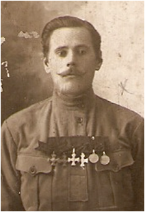

Щепелин Игнатий Степанович
(2.05.1890 – 9.04.1976)
Полный кавалер Георгиевских крестов всех 4-х степеней.
Родился в д. Михеево Шонгско-Николаевской волости Никольского уезда, впоследствии Куриловского сельсовета Кичменгско-Городецкого района. В 1910 году призван на военную службу. С 1914 года участвовал в Первой мировой войне. Воевал связистом на разных фронтах, в том числе и в Бессарабии, нынешней Молдавии. Как вспоминал И.С. Щепелин, «таскал на спине катушку с телефонным проводом под разрывы снарядов и свист пуль»... Вернулся после революции в 1918 году, когда был заключен Брестский мир с Германией. Вернулся полным Георгиевским кавалером с именным оружием: наганом и шашкой, а также жалованной большой Грамотой с золотыми буквами. В начале 30-х годов в его родной деревне Михеево был создан колхоз «Михеевская», и Игнатия Степановича жители единогласно избрали председателем колхоза, которым он отработал около двадцати лет. Все годы колхоз был самым зажиточным в сельсовете.
Родился в д. Михеево Шонгско-Николаевской волости Никольского уезда, впоследствии Куриловского сельсовета Кичменгско-Городецкого района. В 1910 году призван на военную службу. С 1914 года участвовал в Первой мировой войне. Воевал связистом на разных фронтах, в том числе и в Бессарабии, нынешней Молдавии. Как вспоминал И.С. Щепелин, «таскал на спине катушку с телефонным проводом под разрывы снарядов и свист пуль»... Вернулся после революции в 1918 году, когда был заключен Брестский мир с Германией. Вернулся полным Георгиевским кавалером с именным оружием: наганом и шашкой, а также жалованной большой Грамотой с золотыми буквами. В начале 30-х годов в его родной деревне Михеево был создан колхоз «Михеевская», и Игнатия Степановича жители единогласно избрали председателем колхоза, которым он отработал около двадцати лет. Все годы колхоз был самым зажиточным в сельсовете.